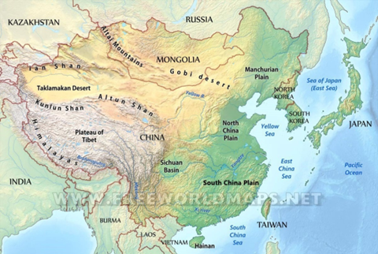

Línea del Tiempo - Corea
Dinastía Joseon hasta 1945
1392
El rey Taejo (Yi Seong-gye) derroca a la anterior
dinastía, la dinastía de Goryeo y funda la dinastía
Joseon.
1392
El neo confucianismo, ya presente en anteriores
dinastías fue adoptado como la ideología estatal de la
dinastía Joseon. El confucianismo se puede entender como
una filosofía y forma de pensar en la cual se enaltece a
los antepasados y se siguen virtudes centradas en el ser
humano para poder vivir una vida pacífica. En
consecuencia a la importancia dada al confucianismo, el
budismo decayó en popularidad, e incluso hubo
persecuciones por ello.
1394
La ciudad de Hanyang (actualmente Seúl) se convierte en
la capital de la dinastía, cortesía del rey Taejo.
1418
El rey Sejong “El Grande” ascende al trono sucediendo a
su padre, el rey Taejong. Es considerado de los reyes
con más impacto de la dinastía Joseon, gracias a sus
logros de gran impacto y contribución de patrocinio a la
ciencia, la tecnología, la literatura y la medicina.
Reinó hasta su muerte en 1450.
1446

En realidad el Hangul fue creado en 1443, más no fue
hasta 1446 que el rey Sejong y sus discípulos pudieron
compilarlo en un libro para publicar. Esta necesidad
surgió de que anteriormente en Corea se utilizaban los
caracteres chinos para escribir. Sin embargo, al estos
ser de un sistema extranjero, no lograba expresar
completamente las palabras, el significado de los
pensamientos y el lenguaje hablado. Esto causó problemas
especialmente para las personas comunes para comunicar
sus reclamos y registrar sus conocimientos.
<1592
A lo largo de la historia de Corea, eran frecuentes los
piratas en el mar y el bandidaje en tierra. El único
propósito de la marina de Joseon era asegurar el
comercio marítimo y evitar que los piratas intervinieran
en este. La armada repelió a los piratas utilizando una
avanzada tecnología de pólvora, incluidos cañones y
flechas de fuego.
1592
Fue uno de los eventos más traumáticos en la historia de
Corea. El general Toyotomi Hideyoshi realizó dos
intentos de invasión a la península de Corea luego de
unificar a Japón en 1591. Inicialmente busco un tratado
que permitiera pasar al ejército Japones por el
territorio con el fin de invadir China. Dado el fallo
del acuerdo, en 1592 invadió Corea. Inicialmente busco
un tratado que permitiera pasar al ejército Japones por
el territorio con el fin de invadir China. Dado el fallo
del acuerdo, en 1592 invadió Corea. Inicialmente buscó
un tratado que le permitiera pasar al ejército Japones
por el territorio con el fin de invadir China. Dado el
fallo del acuerdo, en 1592 invadió Corea. Después de
casi siete años de guerra y conversaciones de tregua en
Corea, Japón fracasó en su objetivo como resultado
combinado del brillante mando naval del almirante
coreano Yi Sun-sin, la constante actividad guerrillera
coreana, la asistencia militar coreana por Ming China, y
por último, la muerte del general Hideyoshi.
1627

A principios del siglo XVII, la política del noreste
asiático se encontraba en un delicado equilibrio entre
la dinastía Joseon en Corea, los Ming en China y los
manchúes. Cuando una facción de Joseon realineó a Corea
con los Ming, los manchúes atacaron en 1627 y una década
más tarde, rompiendo la alianza Joseon-Ming y obligando
a Corea a apoyar a la recién fundada dinastía Qing.
1636
El académico oficial coreano Na Man' gap (1592-1642)
registró la segunda invasión manchú en su diario de
1636, el único relato en primera persona que narra la
dramática resistencia coreana al ataque. Esta invasión
fue particularmente devastadora para Corea; las tropas
mongolas saquearon sus ciudades, el rey Injo se vio
obligado a someterse a Huang Taiji, y Corea se convirtió
en un estado tributario de la Qing. La invasión manchú y
sus secuelas inspiraron a los eruditos coreanos a
estudiar su propia historia y desarrollar su propia
cultura.
1600...
Season 4
La porcelana es quizás la artesanía más representativa
del período de Joseon. El período medio estuvo marcado
por la invasión japonesa de Corea en 1592, durante la
cual pueblos enteros de alfareros coreanos fueron
trasladados por la fuerza a Japón. Esto tuvo un efecto
permanente en la industria alfarera en Corea, ya que los
artesanos tuvieron que volver a aprender técnicas
después de que los maestros se habían ido.
S. XVII
Mediante el intercambio comercial entre Corea y China sé
trajeron literatura, instrumentos y ciencia desarrollada
por curas. Esto permitió la entrada del cristianismo y
la conversión de los coreanos.
1762
El príncipe Sado es ejecutado por su padre debido a
rumores que establecían que el príncipe quería asesinar
a su padre, el Rey Yeongjo. Este fue un evento trágico,
que puso en evidencia los problemas internos de la
familia real.
1795
La incompatibilidad del catolicismo con las prácticas
confucianas presentó unas series de problemas políticos
y sociales para el país. Ya que, el gobierno coreano
empezó la persecución a los católicos que desafiaban la
moral sacrosanta del confucianismo.